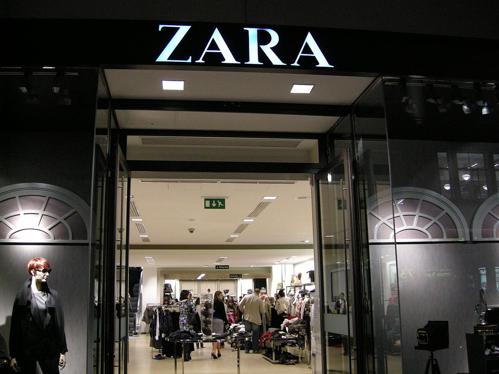

A seasonal strategy exploring brand vision, assortment architecture, supply chain traceability, and circular economy for Zara's Fall 2026 collection.
Zara is the flagship brand of Spain-based Inditex Group, the world's largest fashion retailer. Founded in 1975 by Amancio Ortega, Zara built its identity around one core idea: speed. The brand takes runway-inspired designs and gets them into stores within two to three weeks, way faster than the traditional 8-12 month cycle most fashion companies rely on.
What makes Zara different from other fast fashion brands is how it presents itself. The stores are clean, minimal, and almost gallery-like. There are no flashy ads, no celebrity endorsements, no loud branding. Zara lets the product do the talking. New items drop roughly twice a week, which keeps customers coming back to see what's changed. It creates urgency without being pushy about it.
The brand operates on a vertically integrated model, meaning it controls design, manufacturing, and distribution in-house. This gives Zara the flexibility to respond to trends in real time and pull underperforming styles quickly. It's a system that's hard for competitors to replicate.

Zara's core customer is between 18 and 35, though the brand pulls in shoppers up to their early 40s. They're mostly urban, trend-aware, and have a moderate to mid-level disposable income. These aren't people shopping for luxury designer pieces, but they also don't want to look like they just grabbed the first thing off a rack. They want pieces that feel current and put-together without spending a lot.
Psychographically, Zara shoppers see fashion as a form of self-expression. They're digitally connected, active on social media, and they pay attention to what's trending. They value quality for the price and like the thrill of finding something new every time they walk in or open the app. The rapid inventory turnover is what keeps them loyal, not a points program or a membership discount.
Ages 18-35, urban professionals and students, middle to upper-middle income. Both men and women, though womenswear is the dominant segment.
Style-conscious, trend-reactive, values individuality. Wants to look good without paying designer prices. Active on Instagram and TikTok.
Frequent shoppers. Visits stores or browses online weekly. Responds to newness and scarcity. Rarely waits for sales because items sell out fast.
Zara positions itself as affordable luxury. It's not competing with H&M on price or with designer brands on exclusivity. It sits in this middle ground where the product feels elevated, the store experience is premium, but the prices stay accessible. A dress might be $50-90, a coat $120-200. You're not breaking the bank, but you're also not buying something that falls apart after two washes.
| Category | Price Range | Breadth | Depth |
|---|---|---|---|
| Women's Tops | $20 - $70 | Wide (basics to statement) | Moderate (limited runs) |
| Women's Outerwear | $80 - $250 | Moderate | Shallow (seasonal drops) |
| Women's Handbags | $30 - $90 | Moderate | Shallow |
| Women's Belts | $20 - $50 | Narrow | Shallow |
| Men's Tops | $18 - $60 | Moderate | Moderate |
| Men's Outerwear | $70 - $200 | Moderate | Shallow |
Zara doesn't do traditional advertising. Instead, it invests in store design, prime retail locations on high streets and in major shopping districts, and a curated social media presence. The marketing is the product itself. Window displays change frequently, store layouts get refreshed, and the online experience mirrors the clean in-store aesthetic.
The Fall 2026 "Structure & Shadow" collection draws from architectural silhouettes and tonal layering. Woven tops feature structured shoulders and clean lines in a palette anchored by charcoal, ivory, deep burgundy, and muted olive. Accessories, including handbags and belts, follow the same restrained color story with hardware details in matte black and antique gold.
$59.90
$45.90
$39.90
$49.90
$69.90
$45.90
$35.90
$25.90
Note: Product images from line sheets (Assignments 3 & 4) would be inserted here. Placeholder boxes shown for layout reference.
Tracing a basic Zara cotton t-shirt from raw material to the final product. Since Inditex does not publicly disclose its full supplier list, H&M's publicly available supplier data via Open Supply Hub was used as a comparable reference to identify realistic Tier 1 and Tier 2 facilities.
BCI-certified cotton farms in Turkey's Aegean region (Izmir, Manisa). Organic and Better Cotton practices.
Cotton ginning and spinning in Turkey. Raw cotton cleaned, separated, and spun into yarn.
Kivanc Textile, Bursa, Turkey. BCI-certified facility producing woven and knit fabrics. OEKO-TEX certified.
Garment factory in Istanbul, Turkey. Cutting, sewing, finishing, and quality control. Near Tier 2 to reduce logistics.
Zara (Inditex Group), headquartered in Arteixo, Spain. Turkey is a key proximity sourcing country for faster lead times.
Keeping all tiers within Turkey minimizes transportation distance, reduces the carbon footprint, and shortens lead times. This aligns with Zara's proximity sourcing strategy, where production stays close to key European markets for faster turnaround.
Zara and parent company Inditex have committed to a series of sustainability targets as part of their push toward a more circular business model. As of 2025, 88% of the fibers used across Inditex brands are certified as organic, recycled, or lower-impact alternatives. The company aims to cut value chain emissions by 50% by 2030 and reach net zero by 2040.
Launched in key markets, Zara Pre-Owned allows customers to resell, donate, or repair their used Zara garments. It extends product life cycles and keeps clothing out of landfills. This is a direct application of circular economy thinking within a fast fashion model.
Zara stores have clothing collection bins where customers can drop off used garments from any brand. Collected items are sorted for reuse, recycling, or donation. Since 2015, the program has collected tens of thousands of tonnes of used clothing across 24+ markets.
By 2030, Inditex plans to source 40% of materials from conventional recycling, 25% from next-gen recycled fibers, and 25% from organic or regenerative farming. The remaining 10% will come from certified lower-impact sources. They're also investing in textile-to-textile recycling startups like Circ.
The "Join Life" label marks products made with materials that have a reduced environmental impact, like organic cotton, recycled polyester, and Tencel Lyocell. It's Zara's way of making sustainable options identifiable to the customer without requiring a separate product line.
The tension between fast fashion's volume-driven model and genuine sustainability is real, and it's worth acknowledging. Critics argue that producing less is the only real solution. But within the current framework, Zara is taking measurable steps: proximity sourcing, material innovation, resale infrastructure, and transparency improvements. Whether it's enough is an ongoing conversation in the industry.